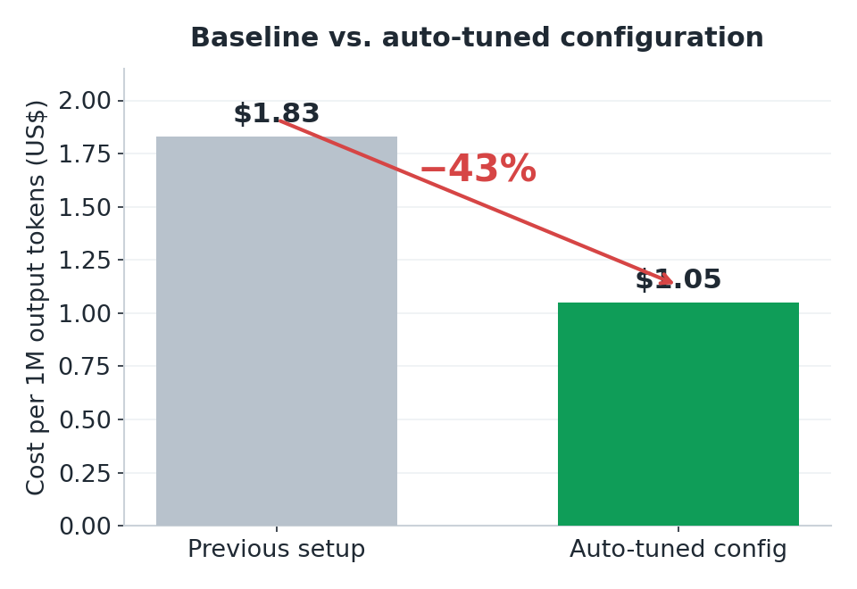
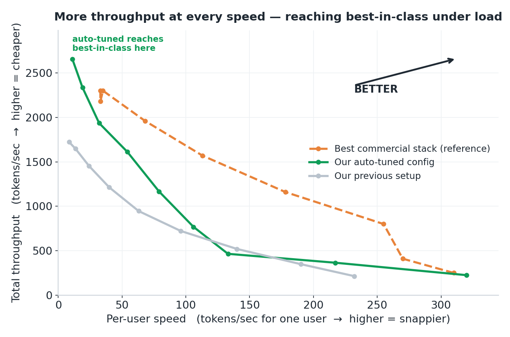
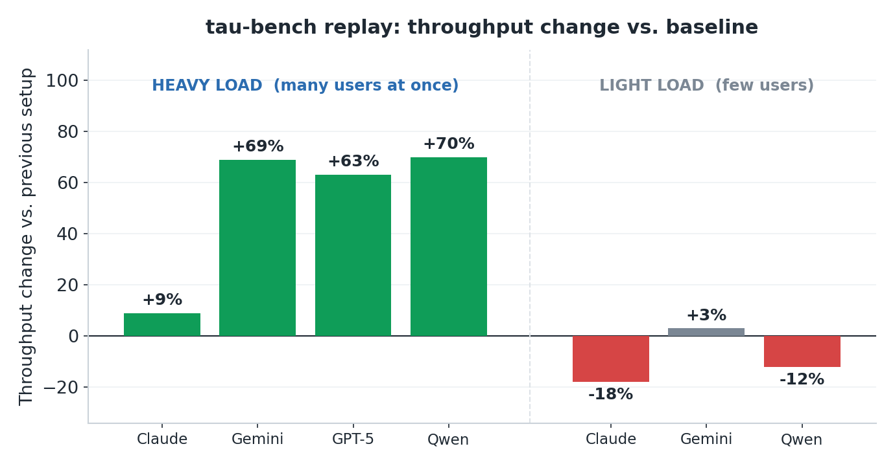

Internal Technical Report · Inference Efficiency · June 2026
An evolutionary search agent (OpenEvolve) tuned the vLLM launch configuration for GPT-OSS-120B on a single NVIDIA H200, with the objective of minimizing cost per output token. This report presents the measured results — cost, throughput, and latency — on a synthetic benchmark and on replayed τ-bench traffic. The model weights were not modified.
The launch configuration exposes on the order of 15 settings — batch sizes, key/value-cache numeric format, attention and mixture-of-experts compute kernels, and speculative-decoding depth — that affect throughput and latency. These were the search space.
OpenEvolve is an evolutionary search agent. Each round proceeds as follows, at a chosen target concurrency:
On the synthetic benchmark (8k-token input, 1k-token output), the optimization — run at concurrency 256 — found a configuration that reduced cost per output token from $1.83 to $1.05 per 1M tokens (−43%) (at $3.50 per H200-hour) and raised output throughput from 1,617 to 2,943 tokens/sec (+82%). The cost figure includes the time to process each request's 8k-token input.
moe_backend=triton (baseline used the Marlin kernel).kv_cache_dtype=fp8 (more compact than the baseline format).max_num_seqs=768, max_num_batched_tokens=36864 (baseline: 256 / 8192).num_speculative_tokens=2; streaming interval stream_interval=10.
The chart plots per-user output speed (tokens/sec for a single user) against total throughput (tokens/sec across all users) at concurrency levels 1–256, from a sweep separate from the optimization run. The configuration's throughput exceeded the baseline at 8 of 9 measured levels; at concurrency 4 the baseline was higher (465 vs. 520 tokens/sec). At concurrency 128 and 256 it exceeded the commercial reference (2,335 vs. 2,180 and 2,657 vs. 2,300 tokens/sec); at intermediate per-user speeds the commercial reference produced higher throughput than both. The gap over the baseline is largest at high concurrency, consistent with the optimization having targeted concurrency 256.

τ-bench multi-turn agent conversations (airline and banking domains) were replayed against both configurations at matched request counts and matched concurrency. At concurrency 64 (airline), throughput changed by +9%, +63%, +69%, +70% across the four source workloads. At concurrency 4 (banking), throughput changed by −18%, +3%, −12% across three workloads (a fourth had no valid baseline and is omitted).

Per-request latency depends on the concurrency the server runs at. At the maximum measured concurrency (256), where throughput is highest, p99 time-to-first-token is high for both configurations because many requests are queued: 113 s for the baseline and 39 s for the throughput-max configuration. p99 inter-token latency (the time between successive output tokens, also called TPOT) was 144 ms for the baseline and 157 ms for the throughput-max configuration. The high time-to-first-token reflects the request-queue depth at this concurrency, not a property of either configuration; at lower concurrency it is much smaller.
To obtain a configuration suitable for latency-sensitive use, the search was re-run at concurrency 16 under explicit latency limits (p99 time-to-first-token ≤ 5,000 ms, p99 inter-token latency ≤ 25 ms). It produced +16% throughput over the baseline while meeting the limits — measured p99 time-to-first-token 4,873 ms and p99 inter-token latency 20.6 ms.
| Configuration | Key settings | Measured results |
|---|---|---|
| Baseline | Marlin MoE kernel; max_num_seqs 256; max_num_batched_tokens 8192 | $1.83 / 1M tokens 1,617 tokens/sec p99 TTFT 113 s (conc. 256) |
| Throughput-max optimized at conc. 256 |
triton MoE; fp8 KV cache; max_num_seqs 768; max_num_batched_tokens 36864; num_speculative_tokens 2; stream_interval 10 | $1.05 / 1M tokens (−43%) 2,943 tokens/sec (+82%) p99 TTFT 39 s (conc. 256) |
| Latency-constrained optimized at conc. 16 |
Marlin MoE; num_speculative_tokens 2; stream_interval 10; FLASH_ATTN attention | +16% throughput vs. baseline p99 TTFT 4,873 ms / TPOT 20.6 ms (conc. 16) |
All three configurations serve the same model on the same single H200; they differ only in launch settings. Cost and throughput are from the optimization runs; p99 time-to-first-token at concurrency 256 is from the configuration sweep. The τ-bench results in §3.3 used the throughput-max configuration.